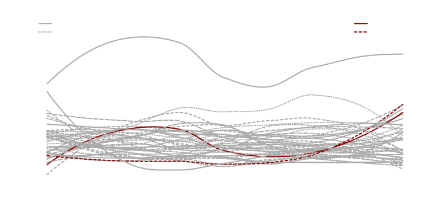

This example tweaks a few results to prepare them for publication or whatever, using the dataset from a project comparing autobiographies: osf.io/vwq9p.
Built with R 4.3.1
Setting up
First, be sure splot is loaded:
Then load in the data and attach it (can take a little while):
Anger Word Usage
Texts are split into 100 segments each (the index
variable), and are identified by author (the name
variable).
To look at a particular category across segments of text, we can just
plot the category against index, with name in
the by position:
splot(anger ~ index * name)Quite messy, and the legend is not drawn automatically when there are
so many levels of by.
We could add an arranged legend, and get rid of points to clean things up a bit:
# lpos positions, ncol changes the number of columns, and
# cex['leg'] changes the font size of the legend.
splot(anger ~ index * name, lpos = "top", ncol = 4, cex = c(leg = .8), points = FALSE)
With this many levels of by, the legend isn’t very useful,
so we might just keep it off.
We’re also interested in non-linear trends over the course of each
text, so we’ll switch to loess lines, and we’ll use myl to
zoom in (restrict the range) a bit:
Prettier at least, but still not very informative.
This project was mostly interested in the Rodger text—how it relates to the Hitler text, and how both of those relate to other autobiographies. As such, it would be nice to know which lines are the Rodger and Hitler texts, and which are (in this case) the highest comparison texts.
To do this, we’ll first have to set up line types and colors outside of splot:
ns <- unique(data$name)
nl <- length(ns)
disp <- data.frame(name = ns, lty = rep_len(1:9, nl))
disp$col <- ifelse(grepl("Hit|Rod", disp$name), "#880101", "#aaaaaa")
disp$lty[grepl("Hit|Rod", disp$name)] <- 1:2
# now we have an object with names associated with line types (lty) and colors (col):
disp[1:10, ]
#> name lty col
#> 1 Henry Adams 1 #aaaaaa
#> 2 Elizabeth von Arnim 2 #aaaaaa
#> 3 Margot Asquith 3 #aaaaaa
#> 4 Clifford Beers 4 #aaaaaa
#> 5 Annie Besant 5 #aaaaaa
#> 6 George Airy 6 #aaaaaa
#> 7 Black Hawk 7 #aaaaaa
#> 8 William Cody 8 #aaaaaa
#> 9 Henry Coke 9 #aaaaaa
#> 10 Joseph Conrad 1 #aaaaaaNow within splot (using the add argument), we can always
mark the Rodger and Hitler text, and dynamically display a set of
comparison texts.
Here, the mnc part is calculating the mean of each text
across segments, then sorting names by their mean and pulling the
highest 2. The lowest 2 could be pulled by changing the
TRUE to FALSE.
In the first legend call, the constants are position
(set in the first argument), and line weight (lwd) and box
type (bty; 'n' for none). Dynamic arguments
are pulled from the disp object we created before, based on
the names in mnc.
splot(anger ~ index * name,
points = FALSE, lines = "loess", myl = c(0, 2.2), colors = disp$col, lty = disp$lty,
add = {
mnc <- names(sort(
colMeans(sapply(cdat$`.^^.`, "[[", "y"))[-grep("Hit|Rod", names(cdat$`.^^.`))],
TRUE
)[1:2])
legend("topleft", sort(mnc),
lty = disp[disp$name %in% mnc, 2], col = disp[disp$name %in% mnc, 3],
lwd = 2, bty = "n"
)
legend(
"topright", c("Adolf Hitler", "Elliot Rodger"),
lty = 1:2, col = disp$col[grep("Hit|Rod", disp$name)], lwd = 2, bty = "n"
)
}
)If we were planning on applying these settings to several graphs (if,
say, we wanted to look at several different y variables
individually), we could add the consistent stuff to an options list:
# quote() prevents things from being evaluated outside of the function.
opt <- list(
points = FALSE,
lines = "loess",
colors = disp$col,
lty = disp$lty,
add = quote({
mnc <- names(sort(colMeans(sapply(cdat$`.^^.`, "[[", "y"))[-grep(
"Hit|Rod",
names(cdat$`.^^.`)
)], TRUE)[1:2])
legend("topleft", sort(mnc),
lty = disp[disp$name %in% mnc, 2], col = disp[disp$name %in% mnc, 3],
lwd = 2, bty = "n"
)
legend("topright", c("Adolf Hitler", "Elliot Rodger"),
lty = 1:2,
col = disp$col[grep("Hit|Rod", disp$name)], lwd = 2, bty = "n"
)
})
)This can save some room at least:

Comparison of Pronoun Usage
We might want to look at a few variables at the same time. In this
dataset, the difference in pronoun use between the Rodger and Hitler
text is interesting, so we’ll look at personal pronouns
(i, we, you, shehe, they) and impersonal pronouns
(ipron) all together:
To better compare each variable between texts, we can put the
variables on the x axis with mv.as.x=TRUE, and z-score with
mv.scale=TRUE to standardize ranges.
While we’re at it, we’ll also pretty things up with better axis
titles, and by removing the subset message (which can be done with
sub=FALSE or just by subsetting the data), and changing
colors and legend position:
splot(
cbind(i, we, you, shehe, they, ipron) ~ name,
type = "bar", mv.as.x = TRUE, mv.scale = TRUE,
data = data[grep("Hit|Rod", data$name), ], title = "Pronoun Usage between Texts",
laby = "Pronouns (z-scored)", labx = "Category", colors = "grey", leg.title = FALSE
)Saving Figures
Now that we have some formatted figures, we might want to use them in other things.
When it comes to rendering, two factors make for the nicest looking figures: anti-aliasing (making lines less pixelated) and scalability (they won’t become pixelated when zoomed in on; a feature of vector-based formats like pdf, svg, and emf). Using vector-based formats means you can preserve the scale of a plot without losing quality; that is, if you want larger text and more compact elements, you can adjust your plot window and rerender the plot until the proportions look right. Even if the window is very small, you can blow the vector based image up to any size.
The default format when saving from within splot
(save=TRUE) is pdf (using cairo_pdf). If
you’re using RStudio, you can save the same quality of pdf from the
Export dropdown.
svg is generally the best format for anti-aliased, scalable images
(format=svg). These can be included in newer versions of
Word and PowerPoint, and are editable in Inkscape among other things (even text
editors!).
For older versions of Word and PowerPoint, emfs can be used instead
of svgs. To save as anti-aliased emfs, you can install and load the
devEMF package
(install.packages('devEMF'); library('devEMF')), then add
format=emf to the plot you want to save.